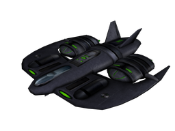

UFO - Alien Invasion
Dieser Artikel wurde für die folgenden Ubuntu-Versionen getestet:
Ubuntu 16.04 Xenial Xerus
Ubuntu 14.04 Trusty Tahr
Zum Verständnis dieses Artikels sind folgende Seiten hilfreich:
UFO:Alien Invasion ist ein Strategiespiel, welches vom Klassiker X-COM inspiriert wurde. Es ist das Jahr 2084. Aliens versuchen die Kontrolle über die Erde zu erhalten. Als Leiter einer geheimen Organisation versucht man die Außerirdischen mit aller Macht zu schlagen. Es gilt Stützpunkte auszubauen, Kämpfer anzuheuern und die Soldaten zu trainieren um sie auf den Sieg vorzubereiten.
Gespielt wird aus isometrischer Perspektive im Einzelspieler-Kampagnenmodus oder als Multiplayer über Internet bzw. LAN.
| Menü | Spielszene |
Installation¶
Desura¶
Das Spiel kann über die Internetseite oder den Client zur Spieleliste hinzugefügt und gestartet werden [1].
PlayDeb¶
Von PlayDeb sind aktuelle Versionen des Spiels zu beziehen [2].
Hinweis!
Zusätzliche Fremdquellen können das System gefährden.
Nach dem Aktualisieren der Paketquellen kann folgendes Paket installiert [3] werden:
ufoai (PlayDeb)
 mit apturl
mit apturl
Paketliste zum Kopieren:
sudo apt-get install ufoai
sudo aptitude install ufoai

git¶
Um die aktuelle Version des Spiels aus dem Quellcode zu kompilieren sind einige Schritte notwendig. Die folgenden Pakete müssen im Vorfeld installiert [3] sein:
gcc
g++
git-core
libsdl1.2-dev
libsdl-ttf2.0-dev
libvorbis-dev
zlib1g-dev
gettext
libtheora-dev
libjpeg8-dev
libpng12-dev
libcurl3-dev
libsdl-mixer1.2-dev
libxml2-dev
libopenal-dev
p7zip-full
libcunit1-dev
binutils-dev
libxvidcore-dev
libmxml-dev
libiberty-dev
mit apturl
Paketliste zum Kopieren:
sudo apt-get install gcc g++ git-core libsdl1.2-dev libsdl-ttf2.0-dev libvorbis-dev zlib1g-dev gettext libtheora-dev libjpeg8-dev libpng12-dev libcurl3-dev libsdl-mixer1.2-dev libxml2-dev libopenal-dev p7zip-full libcunit1-dev binutils-dev libxvidcore-dev libmxml-dev libiberty-dev
sudo aptitude install gcc g++ git-core libsdl1.2-dev libsdl-ttf2.0-dev libvorbis-dev zlib1g-dev gettext libtheora-dev libjpeg8-dev libpng12-dev libcurl3-dev libsdl-mixer1.2-dev libxml2-dev libopenal-dev p7zip-full libcunit1-dev binutils-dev libxvidcore-dev libmxml-dev libiberty-dev
Im nächsten Schritt gilt es die benötigten Dateien zu laden [4]:
git clone git://git.code.sf.net/p/ufoai/code ufoai cd ufoai git checkout ufoai_2.5
Anschließend das Spiel kompilieren [5]:
./configure --disable-testall --target-os=linux make make lang make maps # zeitintensives Unterfangen ./ufo
anstatt dem zeitaufwendigen make maps kann man auch fertig kompilierte Maps im Internet herunterladen:
python ./contrib/map-get/update.py
Gestartet [6] wird das Spiel anschließend über ./ufo +set fs_gamedir ui2.
Tastenkürzel¶
| Tastenkürzel | |
| Taste(n) | Funktion |
| Tab ⇆ | Soldat wechseln |
| ⏎ | Runde beenden |
 | Steuerung der Kamera |
 | Objekt auswählen |

Infobox¶
| Ufo: Alien Invasion | |
| Genre: | Strategie |
| Sprache: |         ... ... |
| Veröffentlichung: | 2008+ |
| Entwickler: | UFO: Alien Invasion Team |
| Systemvoraussetzungen: | 500 MHz Prozessor / 128 MB RAM |
| Medien: | Download |
| Strichcode / EAN / GTIN: | - |
| Läuft mit: | nativ |
- Erstellt mit Inyoka
-
 2004 – 2017 ubuntuusers.de • Einige Rechte vorbehalten
2004 – 2017 ubuntuusers.de • Einige Rechte vorbehalten
Lizenz • Kontakt • Datenschutz • Impressum • Serverstatus -
Serverhousing gespendet von